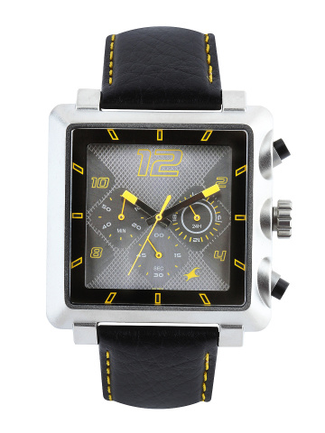
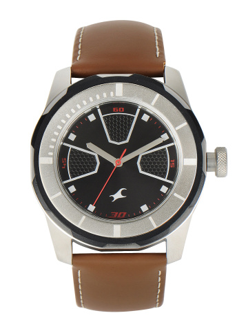
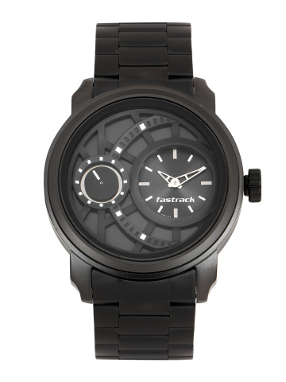
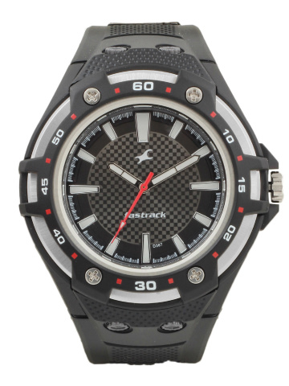
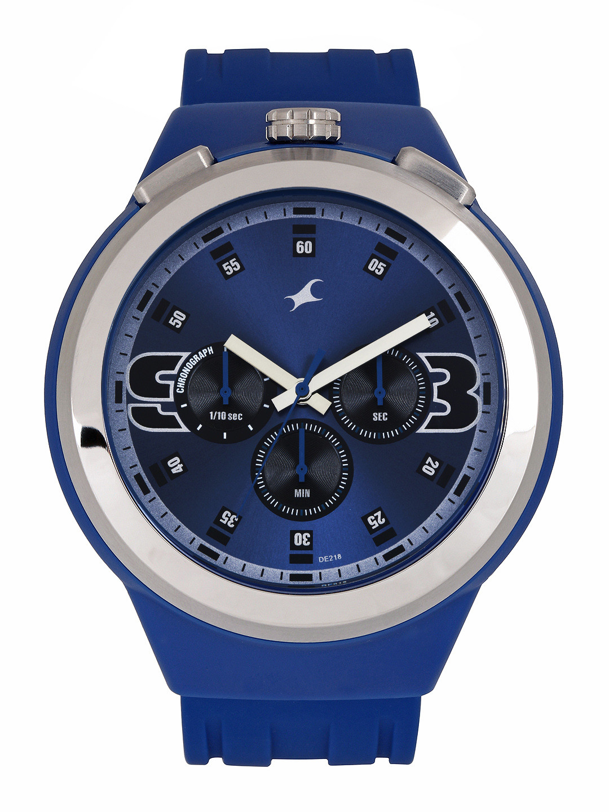
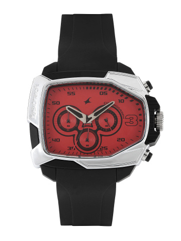
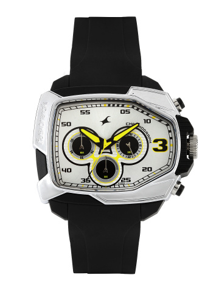
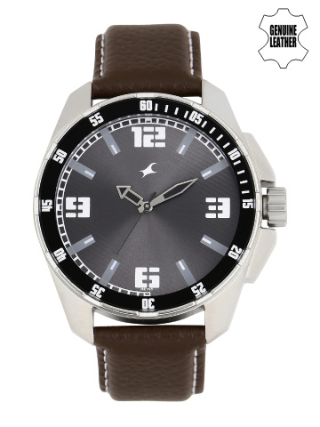
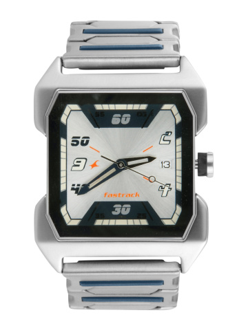

Fastrack was launched in 1998 as a sub-brand of FTtan. It was spun off as an independent Accessory brand targeFTng the urban youth in 2005. With a vision to become a complete fashion brand for the youth, Fastrack quickly extended its footprint to sunglasses in 2005 & then Bags, Belts & Wallets in 2009. Fastrack’s provocaFTve, tongue-in-cheek adverFTsing, its unique & affordable designs & its quick extension across categories ensures its popularity with the urban youth audience, making it one of the fastest growing fashion brands within the country. Its growing presence on Facebook – a fan base that now touches 6 million, keeps it in touch with its audience. With enough categories to fill up a store, Fastrack ‘moved on’ to open its exclusive store chain for its young consumers across the country. The store is posiFToned as a complete accessories desFTnaFTon with all Fastrack gear under one roof. The first store was opened in Pune in 2009; which has now grown to over 150 stores.
Fastrack Chronograph Men Grey Dial Watch 3111SL03PRODUCT CODE:- FT01 BUY NOW@1399 |
Fastrack Men Black Dial Watch 3099SL04PRODUCT CODE:- FT02 BUY NOW@1549 |
Fastrack Men Black Dial Watch 3147KM01PRODUCT CODE:- FT03 BUY NOW@1499 |
Fastrack Men Black Watch NB9332pp02PRODUCT CODE:- FT04 BUY NOW@1199 |
Fastrack Men Blue Dial Chronograph Watch 38002PP03PRODUCT CODE:- FT05 BUY NOW@1899 |
Fastrack Men Chronograph Red Analogue Watch 38005PP03JPRODUCT CODE:- FT06 BUY NOW@1999 |
Fastrack Men Chronograph White Dial Watch 38005PP01JPRODUCT CODE:- FT07 BUY NOW@1299 |
Fastrack Men Grey Dial Watch 3084SL02PRODUCT CODE:- FT08 BUY NOW@1199 |
Fastrack Men Silver-Toned Dial Watch NA1474SM01PRODUCT CODE:- FT09 BUY NOW@2999 |